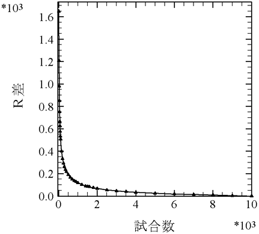
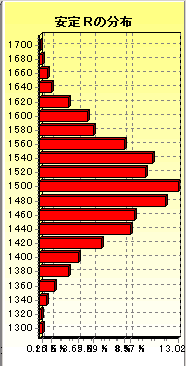
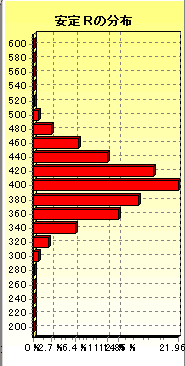
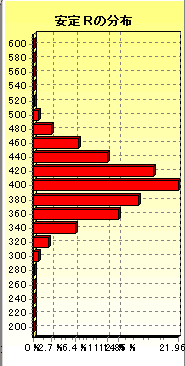

2001/9/08 2001/9/09加筆 とつげき東北
麻雀の成績の客観的比較のための方法論を合理的に研究する。
第一節で、試合数の差による成績の差を埋める方法を一般的に論じ、第二節で、東風戦と東南戦の違いによる成績の差を埋める方法を特に東風荘を対象として論じる（ただしこれは若干の制限つきで一般の場合にも適用できるだろう）。
第１節：異なる試合数の成績比較の方法論
１）麻雀は運のみか？
麻雀の成績を比較する場合にまず問題となるのは、スコアが偶然性によってばらつくことである。
１位・２位・３位・４位を同じ割合で取る人がいる。彼の「実力」は、平均順位にして2.5であるが、この人が1000試合こなした結果、平均順位が2.45であるとか2.55であることはままあることだ（平均順位の偏りの論文参照）。
このことを元に「麻雀なんて運のみだ」と言う人もいるが、この判断は短絡的すぎる。例えば先の例で言えば、平均順位2.3であるような人がいて（それは実際、たいして珍しくもなく存在するレベルである）、その人が1000試合こなした場合に平均順位2.5の人に負け越す確率は１％未満である。100回やって1回しか勝てない人が「麻雀は運のみだ」と言うのはどうかと思う。
麻雀は（野球においてたった１試合の結果からペナントレースの優勝チームが決まるのは馬鹿げていることと同様に）ある程度長期的なデータをもとに「強さ」を語らねばならないゲームなのだ。
東風荘で最強クラスの人は現在のところ、東風荘で平均クラスの打ち手に対して、おおよそ平均順位2.1前後の成績を収める人であると思われる。「1000試合勝負」においてこの人は、平均順位2.5の人に勝ち越す確率が99.999％を超える。明確にある実力差を無視して、自分があまり勝てないからといって麻雀は運のみであると結論することは格好の良いことではない。１回勝負でたまたま最強の人に勝つことよりも、1000回勝負で準最強クラスにいることの方がずっと価値のあることだと思う。というのも、１回勝負で最強の人に勝つことは(10回もすれば)平均的な人にでもできることだが、1000回勝負で良い成績を収めることは「強い人」にしかできないことだからだ。
ここでは、長期データ（理想的には試合数が無限になった場合だが、実質的には有限のなるべく長い成績）でより良い平均順位を収める人を「強い」と呼ぶことにする。
２）「～～試合以上の成績」の問題点
では、成績を比較するにはどうすればよいだろうか？ まず、短期間の成績では意味がないということは明らかであろう。
２試合打った結果が１位１位であれ、３位４位であれ、そのことから即座にどちらが強いかを言うことはできない。1000試合するうちに、最強クラスの人も１度と言わず何度も３位４位を取るだろうし、平均的な人も何度も１位１位を取るだろうからだ。
そこで私が運営する麻雀研究団体では、成績の比較を、長期データ(400試合以上、など)の提出という方法で行っていた。
ところがこの方法にも問題があった。何試合も打って、たまたまよかった部分の400試合を取り出して提出できることから、本来の実力よりも高い成績を出すことができるのだ。試合数ｎが増加すれば分散は減少するので（ランダムな取り出しであったとして、平均順位の実力からのずれの標準偏差はおよそ√｛1.25/ｎ｝）、2000試合のデータよりも1000試合のデータの方が良い成績を出しやすく、また1000試合のデータよりも400試合のデータの方が良くなってしまう。「Ｘ試合以上」での比較だと、Ｘ試合のデータがもっとも良い成績になりやすいという状況ができてしまった。なるべく多い試合数で比較することがなるべく客観的なデータを出すことであるはずなのに、Ｘ試合以上という制限のしかたが逆に客観性を制限する結果に繋がってしまったのである。
これに対しては、「ランダムに取り出したＸ試合」の結果を提出させる方法が手っ取り早いのだが、そのようにすると、全体の試合数に比してＸをどうしても小さくせざるを得なくなる。そのことは「サンプル試合数の増加＝客観性の増加」という当初の目的に反するものだ。
３）異なる試合数を比較するために
kami･･･いや、神のように強い人がいたとして、彼が50試合で平均順位1.1という成績を収めたとしよう。50試合というのは短期的なデータでしかないが、これだけの成績を収めることは、平均順位2.0やそこらの人が100000試合打っても絶対に不可能であり、この成績のデータとしての有効性は評価されるべきである。
そこで、Ａ試合打ったうちから、もっとも成績のよかったＢ試合を取り出し、その成績を申告して良いというシステムにしてみる。そして、そのような「故意の」取り出し方に対しても、客観的に実力を比較できるようにしよう。
あるランダムなＢ試合の成績の分布は以前に調べたが、連続する試合で「良いＢ試合の後半部分を含むような別のＢ試合もまた良い成績になりやすい」ため、「取り出し」はそのような単純な分布で考えることはできない。Ａ試合のうちから「好成績の」Ｂ試合を取り出す場合に、試合の連続性を考慮した上でどの程度本来の実力よりも良い結果が出せるのかを計算する必要がある。
結論から言えば私はこの計算を解析的にでなくシミュレーションで行った。解析的に解くには、あるＢ試合に着目して平均順位を取り、次にはそのＢ試合のうちの一番古い試合の順位を順位分布に従って省き、代わりに最新の試合の順位を順位分布に従って導入する、という作業を繰り返し、１回１回をランダムウォークとみたてて最も離れた点を記録するというふうに考えると良いかもしれない。しかしこの方法では、Ａ試合のうちの最初のＢ試合の扱いが難しく(順位の系列を全て保存するか、初期位置をガウス分布に従って決定しなければならず、計算が少し煩雑になる)、逆に最初のＢ試合を実力どおりだと仮定して単純化すると、かなり結果に偏りが生ずるのだ。その上、順位分布は明らかに２項ではなく、ランダムウォークの近似では結果がずれてしまう。そのような理由から、シミュレーションによって解くこととした。
コンピュータを用いて充分に大きなサイズで「好成績の」結果の、Ｂの値による分散と平均を求め、平均±標準偏差×２(信頼度95.4％)であるような成績を調べた。
ここでＡの値によって当然結果は変わってくるのだが、Ａ＝10000とした。東風荘内では10000試合を超えるプレイヤーは数えるほどしかおらず、その上10000試合の結果のばらつきはＲにして標準偏差13程度であり、Ａ＝20000とした時の標準偏差9と大差がない。10000試合という値は「ほぼ実力を表す」と言って良い。つまり、10000試合行った場合はそれを実力とみなせば良いし、それ以下であれば10000試合打った中から良かったものを取り出したと考えれば良いのである（当然50000試合から取り出す方が、おのおのの成績上昇の平均は増加するが、そのようにできるプレイヤーはほとんどいないし、結果もそう大きくは･･･例えばＲにして50もは･･･違わない）。
４）データ
B 標準偏差 平均上昇
9000 13.88 4
8000 14.46 8
7000 15.03 11
6000 15.92 14
5000 15.86 20
4000 16.70 27
3500 17.65 32
3000 17.73 38
2500 18.94 45
2000 19.85 56
1800 20.34 61
1600 21.37 67
1500 21.26 70
1400 21.64 74
1200 23.05 84
1000 25.13 96
900 25.44 104
800 26.12 112
700 27.88 124
600 28.54 138
500 31.45 156
400 32.78 179
350 33.99 196
300 36.42 216
250 37.94 245
200 40.98 279
150 45.92 335
100 54.80 425
90 54.88 451
80 59.09 485
70 62.65 526
60 59.79 570
50 70.41 635
40 77.20 723
30 82.20 844
20 95.03 1045
10 106.51 1464
全てＲ表記(Ｒの差と平均順位の差は比例し、Ｒ120の差が平均順位0.1の差に対応する)
平均上昇とは、「Ｂ試合取り出し」によって本来の実力より良くなるＲの平均値。
標準偏差とは、そのＲ上昇の分布のそれ。

10000試合から取り出した試合数別の、現実的に付き得る最高程度のＲ差のグラフ（95％以上の確率でこれ以下の差になる）。
例えば、50試合平均順位1.5だった人（安定Ｒ2700）は少なくとも実力Ｒ2700-776＝1924が保証されることになる。これは10000試合安定Ｒ1900を記録することよりも困難である。
「たった50試合の結果だから」と切り捨てるのが今までの方法だったが、具体的に、定量的に、短期間のデータを長期間のデータとある程度の精度で比較することが可能となった。
グラフを見ると、予想通り少ない試合数では劇的に高いＲを記録することができ、400試合前後から徐々に信頼度が高くなる。しかし1000試合を超えた後でも10000試合までの間に、試合数によって取れる最高Ｒは100も違ってくる。「1000試合以上のデータだからどれも同じ」ではなく、やはりより多い試合数での良い成績の方が価値が高いことがわかる。
このグラフにプロットした各点間はほとんど直線とみなしてよく、試合数から補正すべきＲは比較的簡単な計算によって求めることができる（いわゆる線形補間）。
５）適用範囲に関する考察
この方法の問題点は、平均順位2.5の人の順位分布からシミュレーションを行ったことにある。
厳密には、平均順位2.5の人が平均順位2.4をマークする確率と、平均順位2.3の人が平均順位2.2をマークする確率は異なる（もしそれが異ならないなら、平均順位1.05の人は同じ確率で平均順位0.95にならなければならないがそうはなり得ない）。平均順位が2.5から離れれば離れるほど、この方法での実力Ｒの見積もりは不適切になる。
しかしこのことは、最強水準でも平均的な相手に対して平均順位2.1前後という麻雀のゲーム性を考慮すれば、ほとんど問題とならない。正確な計算は面倒なのでしないが、例えば以下の、平均順位が違う＝順位分布が違う場合に、400試合の成績がどのように中心点からずれるかを示したグラフを比較すればそのことは納得できるだろう。
平均順位2.5 平均順位3.0 平均順位3.45

 
確かに平均順位が2.5から大幅にずれた場合（3.45の場合）は、成績の分布もかなり異なってくるが、平均順位3.0程度（また、平均順位2.0程度＝実在する最強水準程度）ならば、平均順位2.5の場合と分布のしかたが違わない。
ところが、仮に麻雀の実力は平均順位2.0～3.0に密集していて上記のように平均順位分布の違いが考慮されなくても良いとしても、非常に大きな実力と成績との差は、この方法を無効にする。たとえば平均順位が3.0の人がいて、彼は50試合にたった１回しかトップをとれないとしても、彼は10000試合のうちには１度以上トップを取るだろう。彼の取り出した成績は１試合平均順位1.0だったとして、彼の最低Ｒは1500という判断になるがこれは誤りと言われねばならないだろう。この問題が生じた原因は、平均順位2.5の人にとって、最高の好調でも順位が1.5しか上昇しないことにある。実力と結果との間に順位にして1.5以上の差が生じた場合、結果は正確にならない。
そこで、10000試合から取り出した場合にでも、まず1.5以上の差がつかないような試合数を、同じくシミュレータを用いていくつかの順位分布別で調べた。
例えば次のようである。
ａ） １位10％２位20％３位30％４位40％ 平均順位3.00 の場合
10試合 Ｒ上昇平均1483 標準偏差137.5 Ｒ上昇平均＋３σ＝1895（順位にして1.5強）
ｂ） １位５％２位５％３位20％４位70％ 平均順位3.55 の場合
25試合 Ｒ上昇平均1547 標準偏差96.3 Ｒ上昇平均＋３σ＝1835（順位にして約1.5）
これ以下の試合数になると、ごくまれに1.5以上の差がついてしまう。実質的には平均順位3.55程度までの実力の人を対象にしかしないであろうから、このあたりを最低線とすれば良いだろう。異なる試合数での成績比較は、25試合以上の結果にのみ適用できるとする。もちろん、平均順位が2.5の人であれば、１試合以上の全ての結果に対して成績比較が可能である。
６）25試合以下の場合への拡張
以上のような、試合数別の成績の比較のための方法論を、以後「（安定Ｒの）一般化」と呼ぶ。
安定Ｒの一般化を（主に集計ツール「できすぎくん」での使用を見据えて）25試合以下にも適用するために、順位分布が2.5から離れているために順位にして1.5以上の差がつくことが起こり得る範囲のデータも取り、25試合以下の試合数についてＲを一般化できるようにする。
10000試合から取り出す(loop=10000)
実力「１位27% ２位0% ３位0% ４位73% 平均順位3.19」（もっとも極端なケース）
試合 σ 平均上昇
25 136.16 1206
24 139.66 1238
23 141.22 1270
22 141.92 1296
21 146.66 1330
20 150.44 1373
19 153.01 1412
18 157.32 1456
17 159.25 1504
16 165.78 1557
15 171.29 1614
14 173.57 1675
13 181.29 1746
12 183.44 1824
11 197.75 1912
10 192.12 2011 ×
9 219.56 2124 ×
8 195.49 2256 ×
7 256.88 2384 ×
×印は、上昇分が飽和する＝統計が役立たなくなる可能性が0.3％以上あるような試合数
実力「１位4% ２位8% ３位26% ４位62% 平均順位3.46」（参考：通常のケース）
試合 σ 平均上昇
25 95.21 776
20 100.81 892
15 113.79 1059
10 150.99 1359
11試合以上25試合未満の場合はこの平均順位3.19（もっとも極端なケース）での値で評価する。
さらに少ない試合数についてはどうか。
ある程度以上に試合数が少なくなると、ほぼ確実に平均順位を1.0にすることができるようになる。たとえば、１位率１％、４位率99％（平均順位3.97）の人でも、１万試合のうち１回だけトップを取ることは容易だし、２連続トップを取ることさえ、難しくない（２連続トップを取る確率は1/10000である）。この例から考えても、１試合の結果または２試合の結果においては、順位にして3.0に限りなく近い上昇をさせることが可能であることは容易に理解できる。
また、例えば10000試合のうちに１度以上５試合連続トップを取ることは、１位率27％４位率73％の人にとって容易である（この時のＲ上昇は2.19）。しかし１位率５％、４位率95％の人にとっては限りなく困難であるし、また同じ平均順位であっても１位率が比較的低く２位率が高いような人には困難である。この程度の試合数になると、順位上昇の可能性が、順位の分布のしかたに大きく依存するようになり、一般的に論じられることができない。下手くそが３連続トップを狙ってたまたまとれたことから、３連続トップを狙わずに打っていた同じ実力の人よりも強いと見積もられるのは不適切である（しかし、10連続トップを狙って打ったとしても、実際それを達成できたならもはや「下手くそ」と呼ばれる必要はないであろう）。
25試合以上の成績の一般化には、最初の平均順位2.5のモデルを用い、また10試合以上の成績の一般化には、上記の平均順位3.19の極端なモデルの値を用いることとし、９試合未満については一般化不可能（最高値である3600が増加したと見なす）としたい。
(参考データ)
実力「１位５% ２位0% ３位0% ４位95% 平均順位3.85」（もっとも極端なケース）
試合 σ 平均上昇
10 179.63 1333
8 225.89 1575
7 296.11 1717
6 306.78 1871
5 287.35 2116
4 278.64 2530
実力「１位3% ２位3% ３位9% ４位85% 平均順位3.76」
試合 σ 平均上昇
15 119.78 969
10 151.58 1269
9 178.08 1375
実力「１位2% ２位0% ３位0% ４位98% 平均順位3.94」
試合 σ 上昇分
10 172.96 1021
9 197.73 1090
8 226.76 1192
5 355.12 1628
4 365.04 1910
3 312.10 2414
2 246.38 3493
７）保証される実力を計算し実力を比較する方法（結論）
ある実力Ｊ（安定Ｒ表示）のプレイヤーが10000試合の試合結果中から連続するＳ試合を全てのパターンにわたって（10000-Ｓ+1通り）取り出す。そのうちで最高成績であったような成績だけを申告するという試行を何度も行う時、それによる、実力 Ｊ と申告された安定Ｒ ｒ の差の平均をＥ、標準偏差をσとすると、申告された安定Ｒ ｒ は、95％以上の確率で Ｊ－Ｅ－２σ ～ Ｊ＋Ｅ＋２σ の範囲内にある。逆に言えば、彼の実力Ｊは ｒ－Ｅ－２σ ～ ｒ＋Ｅ＋２σ の範囲内にある。つまり、10000試合もの試合の中から最高の成績の「選り好み」をした場合でさえ、95％の確率でその範囲にあるような実力の幅を決定することができる（95％というのは、「10000試合からもっとも極端な成績のＳ試合を取り出す」試行のうちの95％である。つまり、自分がこの範囲を超えようと思えば、20万試合程度打つ必要があるがこれは困難だろう）。このことから、あるＳ試合の結果計測された安定Ｒが、どの程度実力からの幅を持つかを合理的に計算することができる。Ｅとσの値は上述したものを用いる。
Ｓ試合の結果でのＥをＥ（Ｓ）、σをσ（Ｓ）と書くと、提出されたＳ試合の成績が計測安定Ｒにして ｒ であった時、彼の実力は ｒ－Ｅ（Ｓ）－２σ（Ｓ） 以上、ｒ＋Ｅ（Ｓ）＋２σ（Ｓ） 以下であることが保証される。
この方法によって、明確に麻雀の実力を比較することができる。保証される安定Ｒの最低値（最低実力）が、他の人や過去の自分の安定Ｒの最高値（最高実力）よりも高い時、「自分の方が強い」ことが理論的な根拠を持って言えることになる。
例えばとつげき東北の牌譜から「かなりついていた時期」を集計すると、保証安定Ｒの最低値は2030強になった。これが仮に「非常についていた、10000試合もの試合結果の中から最高の部分を取り出したようなデータ」であろうとも、95％以上の確率でとつげき東北の実力は安定Ｒ2030より高いことが言えるわけである。実際のところ、1000試合単位の保証安定Ｒの最高値が2030を越えるような人は稀であり、このような差は「明確な実力差」と言うことができる。また、保証安定Ｒの最低値はその性質上、試合数に依存せずに他人と競える、もっとも優れた実力の指標と言えよう。
第２節：東風戦・東南戦での成績比較の方法論
１）東風荘最上卓における偏差値とＲ（平均順位）の関係
できすぎくんv3.64以降では他家Ｒ分布と、それを元にした「最上内偏差値」が解析できるようになった。
この機能を用いて、最上卓におけるあるＲが、最上卓内で「偏差値いくら」になるかを調べた。
各々800試合（他家人数のべ2400以上）のデータである。
他家平均 標準偏差
第一 1955 62.42
第二 1958 68.28
偏差値 第一 第二
85 2174 2197
80 2142 2163
75 2111 2129
70 2080 2095
65 2048 2060
60 2017 2026
55 1986 1992
50 1955 1958
45 1924 1924
40 1893 1890
35 1862 1866
第二の方が若干すそのが広い。
これは主に、第二の方が第一よりも１試合が長いために実力がはっきり出やすいことと、さらにその影響によって同じＲの相手のレベルが、第一よりも第二の方が低くなることに起因する。
1850における実力がかけ離れてしまうため、全体の分布に戻って話を進める。
さっぱり氏の研究（ここではタコメータの出力を用いて概算する）によると全体ではＲ分布の標準偏差は215程度である。
２）東風戦と東南戦における偏差値とＲの関係（結論）
これを「第一での標準偏差」とし、「第二の方が第一よりも１試合が長いために実力がはっきり出やすいこと」のみが標準偏差に影響を与えると仮定すると、東風戦と東南戦の成績比較を行うことができる。
第二の標準偏差は上記データと同じ標準偏差の比を用いて、235と考える。
この方法を採ったのは、現在卓は様々に分かれており、Ｒの分布を総体的に捉えることが不可能であること、Ｒの総体的傾向を公式に出した唯一のデータが東風荘ＨＰのもの（さっぱり氏の研究が引用したもの）であることによる。標準偏差の違いを求めるために、現在の特定卓でのそれを用いた。
結論：第一と第二において同じ実力を表すＲ比較
偏差値 第一 第二
80 2145 2205
75 2038 2088
70 1930 1970
65 1823 1853
60 1715 1735
55 1608 1618
50 1500 1500
45 1392 1382
40 1285 1265
35 1177 1147
30 1070 1030
同じ実力で第一と第二のＲを比較すると以下のように言える。
上ラン負け組レベルにおいて20程度の差が、上ラン勝ち組レベルにおいて30程度の差がある。
最上負け組レベルにおいて30～40程度の差が、最上勝ち組レベルにおいて50～60程度の差がある。
補足）
以上より、一般に次の等式
（第一での安定Ｒ－1500）÷215＝（第二での安定Ｒ－1500）÷235
が成り立つ。
またある人の安定Ｒが r であり、うち第一比率が p 第二比率が 1-p である時、第一安定Ｒ x は次のようにして求められる。
第一安定Ｒ ｘ の人は、第一：第二をｐ：１－ｐの比率で打った場合、第一安定Ｒ ｘ をｐ回に対して第二安定Ｒ
(235/215)×(ｘ-1500)+1500
を１－ｐ回記録し、表示されるＲ r はxp+((235/215)*(x-1500)+1500)(1-p)になる。
つまり、
r=xp+(1.093*(x-1500)+1500)(1-p)
の関係を満たす。
r=xp+((1.093x)-139.535)(1-p)
=xp+1.093x-1.093xp-139.535+139.535p
=x(1.093-0.093p)-139.535+139.535p
より、
x=(r+139.535-139.535p)/(1.093-0.093p)
として、計測された安定Ｒ r と、第一率 p から、第一安定Ｒ x を求めることができる。
まとめ：
以上の研究をもとに、異なる試合数、異なる場所での対戦結果を比較することが可能になった。
この成果は集計ツール「できすぎくん」に導入される。25試合以上の任意の場所の任意の試合数のデータから、そのデータを出すために最低限必要な、第一東風荘での安定Ｒを「実力（保証安定Ｒ最低値）」として表示する。